Class BlockReference
- Namespace
- OpenMEPCad.Autocad
- Assembly
- OpenMEPCad.dll
This .NET class wraps the AcDbBlockReference ObjectARX class. The BlockReference class represents the INSERT entity within AutoCAD. A block reference is used to place, size, and display an instance of the collection of entities within the BlockTableRecord that it references. In addition, block references can be the owner of Attribute entities (the list of which is automatically terminated by an SequenceEnd entity). Classes Derived from AcDbBlockReference. Classes derived from BlockReference must supermessage the base class's WorldDraw() function and allow it to do the work of drawing the entities in the block table record. This allows the osnap code to distinguish the graphics for each entity in the block table record and automatically get each entity's osnap points without having to iterate through the block reference.
public class BlockReference- Inheritance
-
BlockReference
- Inherited Members
Methods
BoundingBox(dynamic)
Get Bounding box of BlockReference
public static BoundingBox BoundingBox(dynamic AcadBlockReference)Parameters
AcadBlockReferencedynamic
Returns
- BoundingBox
Examples
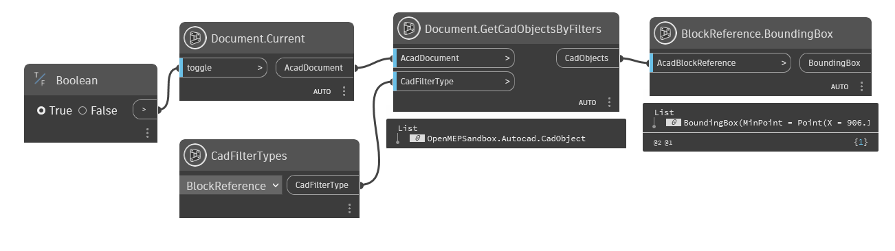
BlockReference.BoundingBox.dynConvertToAnonymousBlock(dynamic)
Converts a dynamic block to a regular anonymous block.
public static dynamic ConvertToAnonymousBlock(dynamic AcadBlockReference)Parameters
AcadBlockReferencedynamicAcadBlockReference
Returns
- dynamic
AcadBlockReference
Examples
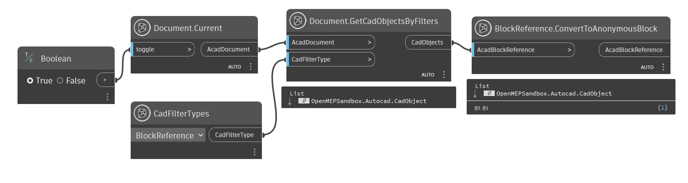
BlockReference.ConvertToAnonymousBlock.dynConvertToStaticBlock(dynamic, string)
Converts a dynamic block to a regular named block.
public static dynamic ConvertToStaticBlock(dynamic AcadBlockReference, string newBlockName)Parameters
AcadBlockReferencedynamicnewBlockNamestringnew name of block
Returns
- dynamic
AcadBlockReference
Examples
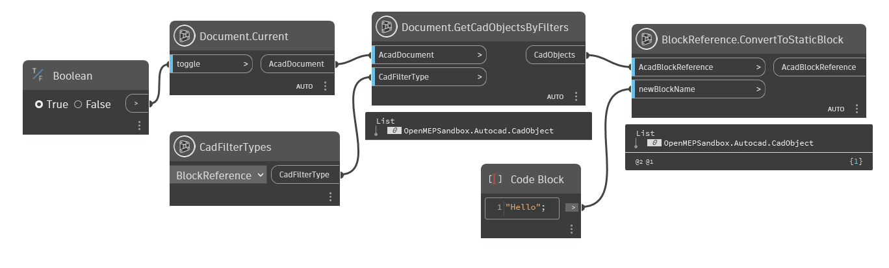
BlockReference.ConvertToStaticBlock.dynEffectiveName(dynamic)
Specifies the original block name.
public static string EffectiveName(dynamic AcadBlockReference)Parameters
AcadBlockReferencedynamicAcadBlockReference
Returns
- string
The effective name is the name of the block as the user would see it in the user interface. Dynamic blocks may draw themselves with an anonymous block whose name is different than the block name the user sees for the block in the user interface. The Name property returns the name of the block used to draw the reference, while the EffectiveName is the name the user sees for the reference.
Examples
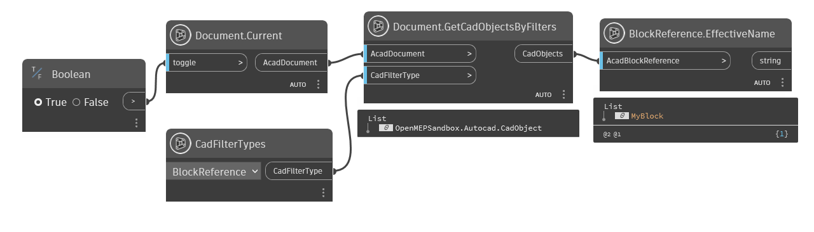
BlockReference.EffectiveName.dynEntityTransparency(dynamic)
Specifies the transparency value for the entity.
public static dynamic EntityTransparency(dynamic AcadBlockReference)Parameters
AcadBlockReferencedynamicAcadBlockReference
Returns
- dynamic
Use one of the following values: ByLayer: Transparency value determined by layer ByBlock: Transparency value determined by block 0: Fully opaque (not transparent) 1-90: Transparency value defined as a percentage
Examples
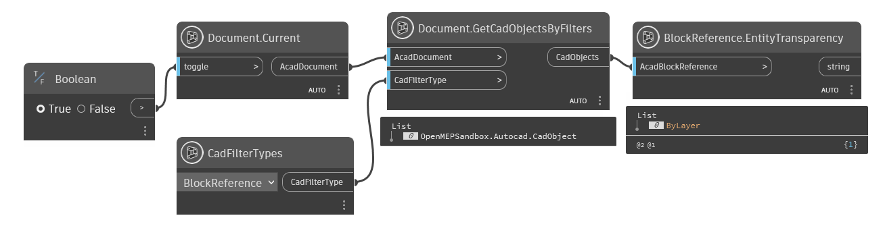
BlockReference.EntityTransparency.dynGetAttributes(dynamic)
Get Attributes of the block reference https://help.autodesk.com/view/OARX/2022/ENU/?guid=GUID-0630EFF2-51A2-46E4-A5A1-0377FB7E38E8
[MultiReturn(new string[] { "Tags", "TextStrings" })]
public static Dictionary<string, object> GetAttributes(dynamic AcadBlockReference)Parameters
AcadBlockReferencedynamic
Returns
- Dictionary<string, object>
information of AcadAttributeReference
Examples
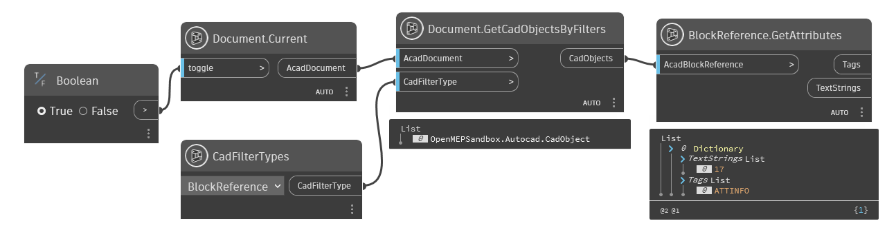
BlockReference.GetAttributes.dynGetDynamicBlockProperties(dynamic)
Get Dynamic Block Properties
[MultiReturn(new string[] { "names", "descriptions", "unitsTypes", "values", "allowValues" })]
public static Dictionary<string, object> GetDynamicBlockProperties(dynamic AcadBlockReference)Parameters
AcadBlockReferencedynamicAcadBlockReference
Returns
Examples
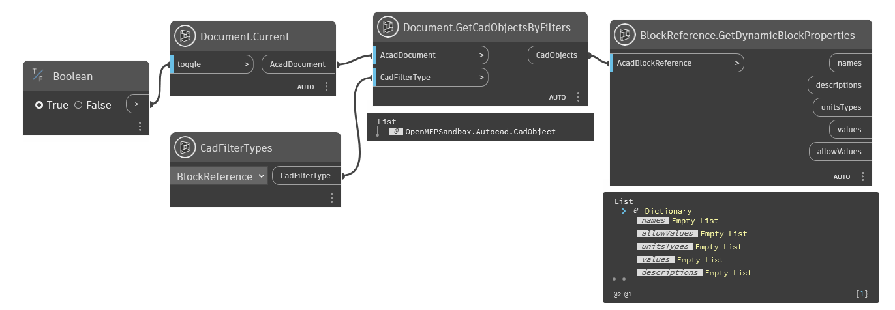
BlockReference.GetDynamicBlockProperties.dynBlockReference.GetDynamicBlockProperties.dyn
Handle(dynamic)
Return Handle value of Block Reference
public static string Handle(dynamic AcadBlockReference)Parameters
AcadBlockReferencedynamic
Returns
Examples
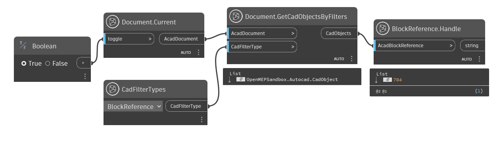
BlockReference.Handle.dynHasAttributes(dynamic)
Check Attributes of Cad Block Reference
[NodeCategory("Query")]
public static bool HasAttributes(dynamic AcadBlockReference)Parameters
AcadBlockReferencedynamic
Returns
Examples
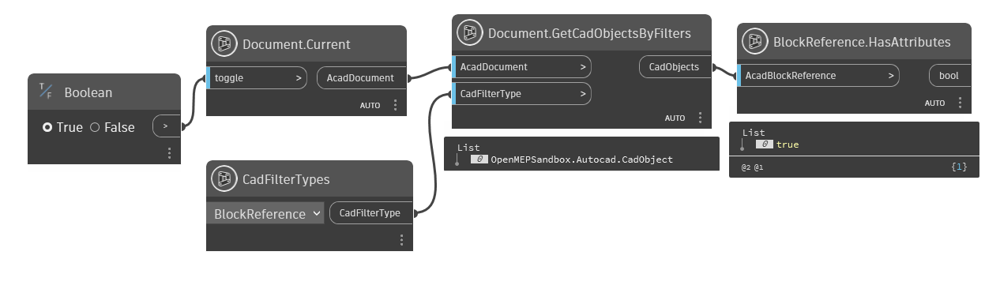
BlockReference.HasAttributes.dynHighlight(dynamic, bool)
Highlight BlockReference
public static void Highlight(dynamic AcadBlockReference, bool HighlightFlag)Parameters
AcadBlockReferencedynamicHighlightFlagbool
Examples
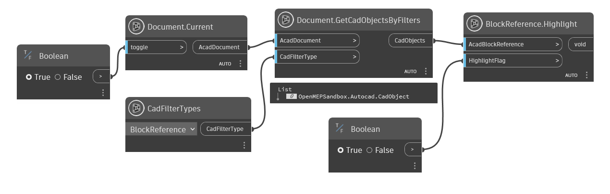
BlockReference.Highlight.dynInsertionPoint(dynamic)
Return Location Insert of Block Reference
public static Point InsertionPoint(dynamic AcadBlockReference)Parameters
AcadBlockReferencedynamic
Returns
- Point
location inserted
Examples
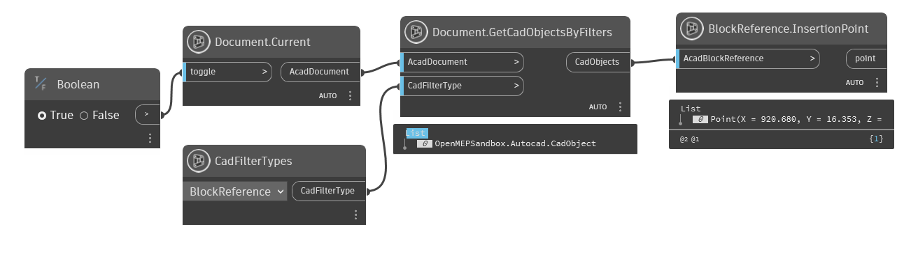
BlockReference.InsertionPoint.dynExceptions
IsDynamicBlock(dynamic)
Check if block reference is dynamic
[NodeCategory("Query")]
public static dynamic IsDynamicBlock(dynamic AcadBlockReference)Parameters
AcadBlockReferencedynamic
Returns
- dynamic
True if block is Dynamic
Examples
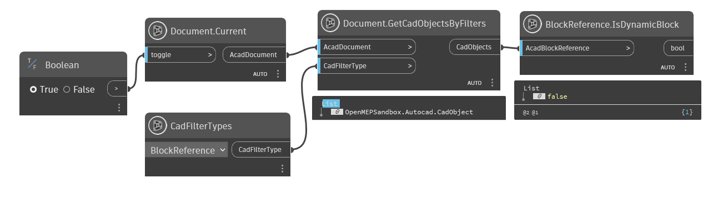
BlockReference.IsDynamicBlock.dynLayer(dynamic)
Return Layer name of the block reference
public static string Layer(dynamic AcadBlockReference)Parameters
AcadBlockReferencedynamic
Returns
Examples
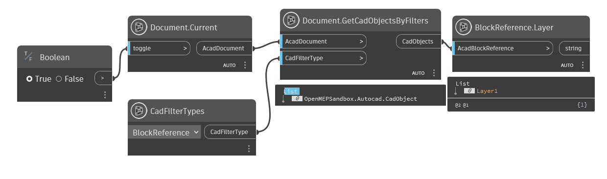
BlockReference.Layer.dynName(dynamic)
Return name of the block reference
public static dynamic Name(dynamic AcadBlockReference)Parameters
AcadBlockReferencedynamic
Returns
- dynamic
name of block reference object
Examples
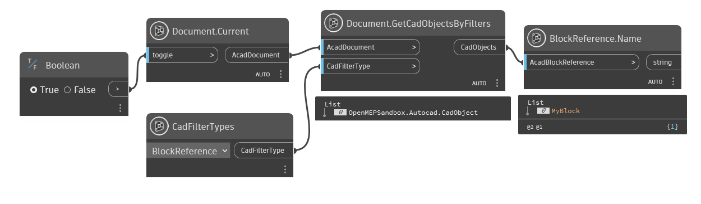
BlockReference.Name.dynObjectID(dynamic)
Gets the object ID.
public static dynamic ObjectID(dynamic AcadBlockReference)Parameters
AcadBlockReferencedynamic
Returns
- dynamic
Id of Autocad Object
Examples
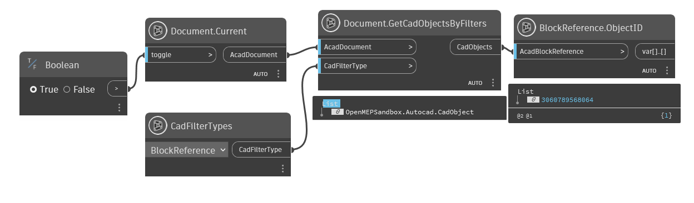
BlockReference.ObjectID.dynObjectName(dynamic)
Gets the AutoCAD class name of the object.
public static dynamic ObjectName(dynamic AcadBlockReference)Parameters
AcadBlockReferencedynamic
Returns
- dynamic
The AutoCAD class name of an object.
Examples
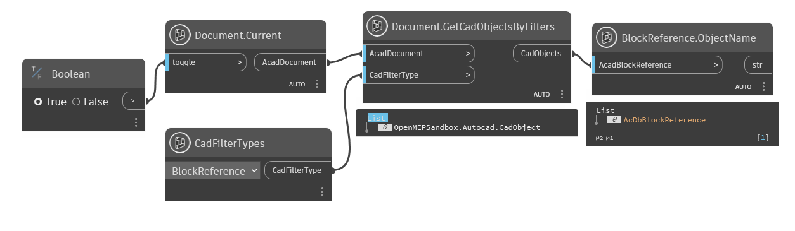
BlockReference.ObjectName.dynOwnerID(dynamic)
Gets the object ID of the owner (parent) object.
public static dynamic OwnerID(dynamic AcadBlockReference)Parameters
AcadBlockReferencedynamicAcadBlockReference
Returns
- dynamic
The object ID of an object's owner.
Examples
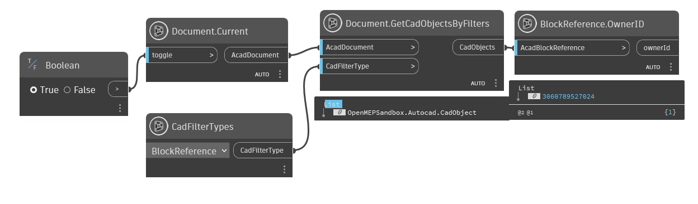
BlockReference.OwnerID.dynResetBlock(dynamic)
Resets the AcDbBlockReference to the default state of the dynamic block. All properties on the AcDbBlockReference are set to match the values in the block definition.
public static dynamic ResetBlock(dynamic AcadBlockReference)Parameters
AcadBlockReferencedynamicAcadBlockReference
Returns
- dynamic
AcadBlockReference
Examples
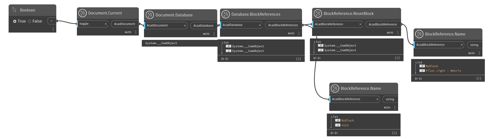
BlockReference.ResetBlock.dynRotation(dynamic)
Return Rotation of the block reference
public static double Rotation(dynamic AcadBlockReference)Parameters
AcadBlockReferencedynamic
Returns
- double
angle(degrees)
Examples
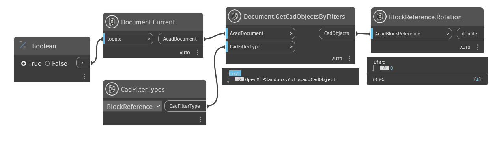
BlockReference.Rotation.dynUnits(dynamic)
Check Block Reference InsUnits
public static string Units(dynamic AcadBlockReference)Parameters
AcadBlockReferencedynamic
Returns
- string
Units
Examples
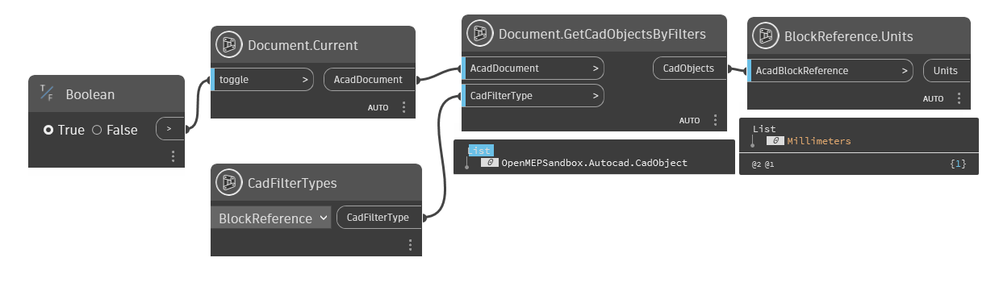
BlockReference.Units.dynUnitsFactor(dynamic)
Return result of InsUnitsFactor
public static double UnitsFactor(dynamic AcadBlockReference)Parameters
AcadBlockReferencedynamic
Returns
- double
UnitsFactor
Examples
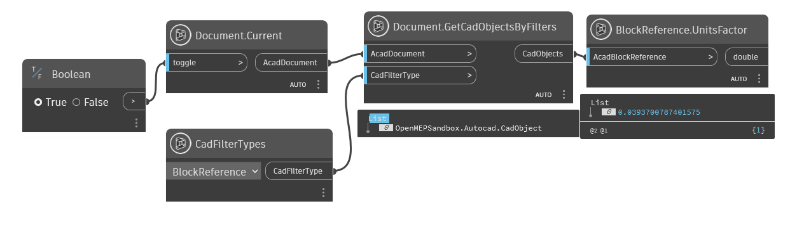
BlockReference.UnitsFactor.dynVisible(dynamic)
Return True if block reference is visible
[NodeCategory("Query")]
public static bool Visible(dynamic AcadBlockReference)Parameters
AcadBlockReferencedynamic
Returns
- bool
true if visible
Examples
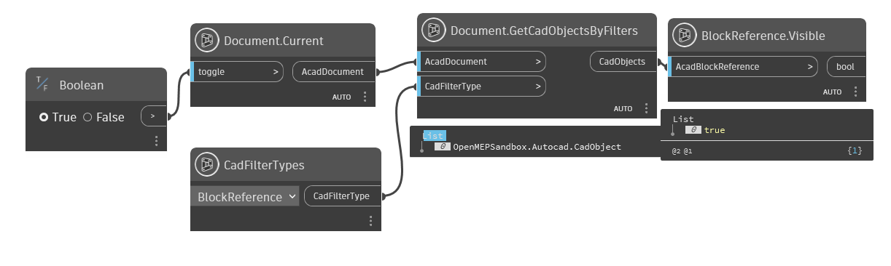
BlockReference.Visible.dynXScaleFactor(dynamic)
Specifies the X scale factor for the block or external reference (xref).
public static double XScaleFactor(dynamic AcadBlockReference)Parameters
AcadBlockReferencedynamic
Returns
- double
A non-zero real number.
Remarks
The initial scale factor is 1.0.
YScaleFactor(dynamic)
Specifies the Y scale factor for the block or external reference (xref).
public static double YScaleFactor(dynamic AcadBlockReference)Parameters
AcadBlockReferencedynamic
Returns
- double
A non-zero real number.
Remarks
The initial scale factor is 1.0.
ZScaleFactor(dynamic)
Specifies the Z scale factor for the block or external reference (xref).
public static double ZScaleFactor(dynamic AcadBlockReference)Parameters
AcadBlockReferencedynamic
Returns
- double
A non-zero real number.
Remarks
The initial scale factor is 1.0.